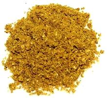

 |
Garam Masala - TrinidadTrinidad / Guyana | ||||
| Makes: Effort: Sched: DoAhead: |
1/3 cup ** 20 min Yes |
Garam Masala was brought from India (see History) and evolved into a unique spicing tailored to Caribbean tastes and ingredients. See Ingredients. | |||
|
|
------- 1-1/4 1/3 1 1-1/4 1 1-1/4 ------- 2 13 1/2 |
--- t c t t t t --- T |
-- Toasted Cumin seeds Coriander seeds Mustard seeds Fenugreek seeds Peppercorns black Anise seeds ------------ Chilis, dried (2) Cloves, whole Turmeric, ground |
Make - (20 min)
|